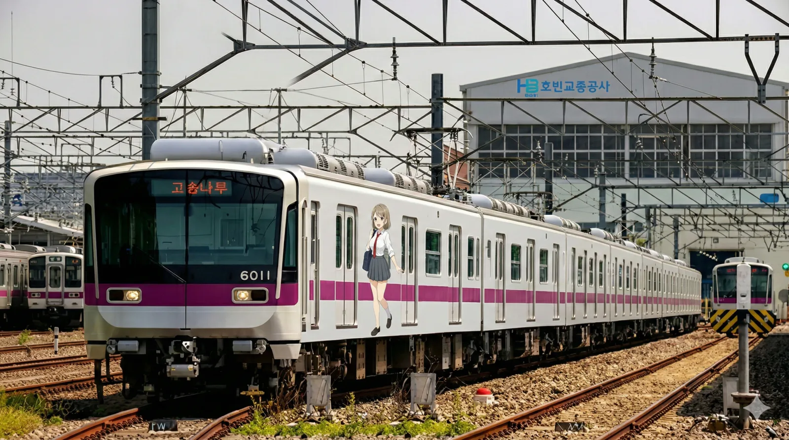
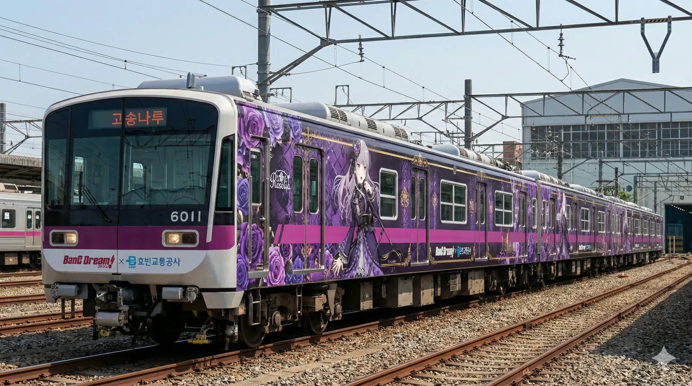
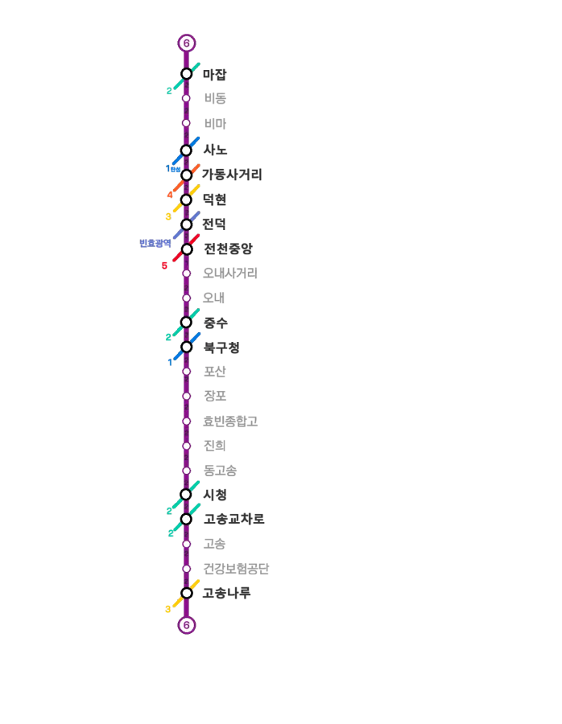

|
|||
|
   노선도
|
|||
| 노선 정보 | |||
|---|---|---|---|
| 노선 분류 | 도시철도 | ||
| 차량 분류 | 중형 중전철 | ||
| 기점 | 마잡역 | ||
| 종점 | 고송나루역 | ||
| 역 수 | 22개 | ||
| 구성 노선 | 효빈 도시철도 6호선 | ||
| 상징색 | 보라색 (#881188) | ||
| 개통일 | 2016년 4월 3일 (9주년) | ||
| 소유자 | 효빈광역시 | ||
| 운영사 | 효빈교통공사 | ||
| 사용 차량 | 효빈교통공사 6000호대 전동차 | ||
| 차량기지 |
마잡차량사업소[1] 추산차량사업소 |
||
| 노선 제원 | |||
| 노선연장 | 21.61km | ||
| 궤간 | 1,435㎜ (표준궤) | ||
| 선로구성 | 복선 | ||
| 급전방식 | 직류 1,500V 가공전차선[2] | ||
| 신호방식 | Kyosan Signal ATC/ATO | ||
| 최고속도 | 70㎞/h | ||
| 표정속도 | 31.1㎞/h | ||
| 통행방향 | 우측통행 | ||
| 개통 연혁 |
2016.4.3 마잡 ↔ 고송나루 (시청, 전덕 제외) 2016.9.21 시청역 추가 개통 2021.5.31 전덕역 추가 개통 |
||

1. 개요
효빈 도시철도의 핵심 대동맥이자 현재 효빈권 전철 중 가장 높은 역당 승하차량을 기록하고 있는 최고의 흑자 노선이다. 운영기관은 2016년 본 노선 개통과 함께 독립한 효빈교통공사이며 운행하는 열차는 효빈교통공사 6000호대 전동차(7량 1편성), 통행방식은 우측통행이다. 노선색은 ● 보라색(#881188)이며, 색에 담긴 뜻은 도시를 이끄는 '상상력'이다.
배차간격은 출퇴근(RH) 시 2~3분, 평시(NH) 4~6분, 첫/막차 시간대에는 6~13분 간격으로 극도로 촘촘하게 운행되며, 사실상 효빈시의 2호선(순환선)과 3호선을 보조하는 최강의 바이패스(우회) 라인으로 활약 중이다.
2. 건설 목적
- 2호선 급행성격 노선 개설 및 3호선 혼잡도 완화: 터져나가던 3호선과 빙빙 돌아가는 2호선의 부담을 크게 덜어주며, 중수-청엽 간 폭발적인 이동 수요를 직선으로 꽂아준다.
- 철도 음영지역 교통수단 확보: 오내동, 고송신도시 북부, 진희동, 포산동 등 기존에 버스밖에 없던 거대 주거지에 전철 혜택을 제공한다.
- 완벽한 환승 네트워크 및 공단 출근로 확보: 6호선의 기종착역인 마잡과 고송나루가 각각 2호선, 3호선과 환승이 되는 구조이며, 중간 거점인 덕현역, 중수역, 북구청역 등을 통해 1~5호선과 완벽하게 얽혀있다. 특히 청엽지구와 고송신도시 사이를 오가는 시간을 획기적으로 감축했고, 1·2호선 환승을 통해 공단 지역 출근 통근러들의 구세주가 되었다.
3. 역사 및 사건사고 (기록말살과 부활의 서사시)
6호선은 노선 기획부터 착공, 개통에 이르기까지 효빈시 정치판의 모든 음모와 추악한 카르텔, 그리고 이를 극복해 낸 시민들의 승리가 집약된 파란만장한 역사를 지니고 있다.
3.1. 2006년: 두청운수 독점을 위한 철도 말살 공작
2006년 6호선 논의가 시작되면서 경전철과 중전철 중 어느 것으로 할지에 대한 치열한 논쟁이 있었다. 본래 2008년 내로 계획을 확정하여 착공, 2011년 내로 개통을 계획하며 순조롭게 용역 조사가 진행 중이었다.
그러나 2006년 지방선거에서 박현만 시장이 전차 폐지를 공약으로 내건 극우파 조폭 출신 윤대환 후보에게 단 3표 차이로 패배하며 6호선의 미래는 암흑 속으로 빠져들었다. 윤대환은 자신의 일가가 소유한 두청운수(시내버스)의 독점 수익을 지키기 위해, 2006년 8월 진행 중이던 용역 조사를 강제 백지화시키고 사업을 전면 중단해버린다.
이로 인해 2호선과 3호선에서 한계치까지 미어터지며 출퇴근 지옥을 겪던 고송신도시, 중수지구, 청엽지구 시민들의 분노는 극에 달했고, 특히 신설 이전한 시청이 위치한 고송신도시 주민들은 폭동 직전까지 치달았다.
3.2. 6호선 설계도 파쇄 사건 (2007년 11월)
발생 일시: 2007년 11월 10일 밤 9시경
발생 장소: 효빈시청 본관 지하 2층 소각장 및 국토교통부 메인 서버
주범: 윤대환 및 두청운수 소속 용역, 국토부 매수 공무원
3.2.1. 11월의 광기: "내가 망하면 이 도시의 미래도 태운다"
2007년 11월, 대법원 당선무효형 선고를 눈앞에 둔 윤대환은 "내가 못 하는 사업은 남도 못하게 해야 한다"는 극도의 뒤틀린 심보로, 수년간 수십억을 들여 완성한 6호선의 핵심 실시설계 도면과 지질 조사 데이터를 물리적·전자적으로 모조리 파괴해버리는 전대미문의 공공기록물 테러를 저지른다.
3.2.2. [상세] 효빈시청 지하 소각장의 비명 (11월 10일)
11월 10일 밤 9시, 두청운수 로고를 단 3.5톤 트럭 두 대가 시청 뒷마당으로 진입했다. 윤대환이 고용한 용역들은 문서고에서 쏟아져 나오는 수천 권의 6호선 서류 박스를 소각장과 파쇄실로 미친 듯이 옮겼다. 붉은 관인이 찍힌 6호선 실시설계 인가 도면 원본들이 무참히 갈려나갔고, 윤대환은 "전철이 없어야 내 갈색 버스가 6,300원씩 받고 가축 수송을 할 거 아냐! 보라색만 봐도 치가 떨려!"라며 광기를 부렸다.
하지만 진짜 테러는 디지털 마스터 데이터의 영구 삭제였다. 시청 뒷마당에서 연막극이 벌어지는 사이, 윤대환에게 매수된 국토교통부 실무진이 정부 메인 서버에 접속하여 6호선의 CAD 파일, 교통영향평가 승인 기록 등을 통째로 포맷해버렸다. 윤대환은 설계 업체와 건설사 임원들까지 협박하여 민간 사내 서버에 있던 백업 데이터마저 강제로 지우게 만들며, 세상에서 6호선을 증명할 수 있는 모든 데이터를 완벽하게 소멸(기록말살형)시켰다.
이 미친 테러 덕분에 효빈시는 직접적인 혈세 수백억 원을 날렸고, 행정 절차를 0부터 다시 밟느라 6호선 개통은 예정보다 5년이나 지연된 2016년에야 겨우 이루어지게 되었다.
3.2.3. [실록] 효빈의 태양이 다시 뜨다 (11월 30일)
2007년 11월 30일 오전 10시 10분, 대법원이 윤대환에게 "공공재 파괴 및 국토부 서버 전자기록 파괴 교사" 등의 혐의로 당선무효 및 징역형을 확정했다. 수사관들에게 끌려나가는 순간에도 윤대환은 "국토부 데이터까지 다 날렸어! 니들은 이제 평생 전철 못 타! 무조건 내 똥색 버스에 낑겨 타야 돼!"라며 마지막까지 악을 썼다.
3.2.4. 정치적 후폭풍: '보수의 희망'을 분쇄하다
이 사건은 6호선의 최대 수혜지였던 북구의 고송동(최고급 부촌)과 중수동(법조타운)의 정치 지형을 완전히 박살 냈다. 재산권과 생활권이 침해당한 부유층, 그리고 법치주의 파괴에 격노한 법조계 엘리트들이 일제히 등을 돌리며, 한때 보수 정당의 스윙보터였던 이 지역은 이후 진보 및 민주계열에 80% 이상의 몰표를 던지는 '난공불락의 콘크리트 파란 요새'로 완벽하게 흑화해 버렸다.
3.3. 소홍문의 6호선 경전철화 획책과 효빈교통공사 분사 (2012~2016)
2008년 6월 박현만 시장이 복귀하여 사업을 기적적으로 재개했으나, 2009년까지 효빈도시공사에 알박기로 남아있던 윤대환의 낙하산 적폐, 소홍문 사장이 또다시 농간을 부리기 시작했다. 소홍문은 6호선의 엄청난 수요 예측을 고의로 축소 누락하고, 언론에 "중전철은 세금 낭비다"라는 궤변을 퍼뜨리며 경전철(AGT)로 건설하려 획책했다. 경전철로 지옥철을 유발한 뒤, 폐업했던 윤대환계 '두청운수' 버스를 다시 부활시켜 독점 수익을 얻게 하려는 악랄한 이면계약 때문이었다.
그러나 실무형 김성민 시장(2014년 취임)이 이 수작질과 뒷돈 거래 정황을 잡아내며 대폭발했다. 김성민 시장은 "철도를 사유화하려는 도시공사 놈들에게서 당장 운영권을 뺏어라!"라며 극대노했고, 2016년 7월 9일 직권으로 도시공사에서 철도본부를 뜯어내 효빈교통공사라는 별도 법인으로 강제 분사(Spin-off)시키는 초강수를 두었다. 소홍문은 배임수재로 감옥에 직행했다.[4]
결과적으로 6호선은 너무 미어터질 것을 대비해 경전철이 아닌 중형 중전철로, 그것도 아예 수요에 맞게 7량 편성(노반 넉넉히 확충)으로 승격 건설되었다. 그리고 2016년 4월 3일 감격스러운 개통과 함께 6호선 마스코트 라세나가 마침내 빛을 보게 되었다. 잃어버린 5년의 한을 푸는 순간이었다.
4. 환경 (안내방송)
정확한 안내방송 문장과 표현을 원한다면 차내 안내방송은 안내방송/열차/도시철도를, 역내 안내방송은 안내방송/역을 참고하기 바랍니다.
4.1. 안내방송 BGM
| 구분 | 상행 | 하행 | 종착 | 환승 | 출발 | ||
|---|---|---|---|---|---|---|---|
| 완행 | 급행 | 완행 | 급행 | ||||
| 1~8호선 일반 | 파도내음 | 휘황곡[1] | 물길소리 | 소라의눈물[1] | 잔잔바다 | 뱃사공 삼중주 | 효빈교통공사 로고송 |
| 이벤트 한정 | HAF(효빈 애니메이션 페스티벌) 기간 한정 사용 (매년 BGM 변경) | ||||||
- [1] 6호선은 노선 특성상 지나가는 거의 모든 역이 핵심 수요처이거나 거대 환승 거점이기 때문에 전 구간 완행으로만 운행되며 급행 BGM은 표출되지 않는다. 다 정차해야 하는데 무슨 수로 급행을 굴리나(...)
4.2. 안내방송 텍스트
| 언어 | 일반 및 환승 안내방송 | 종착 안내방송 |
|---|---|---|
| 한국어 | "이번 역은 [역명], [역명]역입니다. 내리실 문은 [방향]입니다. [환승노선]으로 갈아타실 고객께서는 이번 역에서 내리시기 바랍니다." | "이번 역은 이 열차의 마지막 역인 [종착역], [종착역]역입니다. 내리실 문은 [방향]입니다. 오늘도 효빈교통공사 열차를 이용해 주셔서 고맙습니다. 안녕히 가십시오." |
| 영어 | "This stop is [역명], [역명]. The doors are on your [방향]. You can transfer to the [환승노선]." | "This stop is [종착역], [종착역]. The last station. The doors are on your [방향]. Thank you for traveling with HyobinMetro." |
| 중국어 | "前方到站是 [역명] 站。 需要换乘 [환승노선] 的乘客，请在本站下车。" | - |
| 일본어 | "次は、[역명]、[역명]駅です. [환승노선] はお乗り換えです。" | - |
5. 역할
효빈교통공사의 가장 거대한 밥줄이자, 현금 창출 능력이 가장 뛰어난 최고의 흑자 노선이다. 무려 최근 통계로는 역당 일평균 승하차량이 대한민국 넘버투로 불리는 부산도시철도 1호선을 아예 뛰어넘어버렸다. 현재 비수도권 도시철도 중 역당 이용객 수 1위를 당당히 마크하고 있으며, 6호선의 초대박 덕분에 효빈교통공사는 넘치는 잉여 자본으로 창전선과 청엽선 건설을 더 빠르게 추진할 수 있는 막강한 원동력을 얻었다.
혼잡도가 극악이었던 2호선의 중수-고송 간 구간, 그리고 3호선의 청엽-고송 간 이동 수요를 완벽하게 흡수 및 분산시켰다. 또한 철도 소외지역이었던 중수-청엽 간의 부족한 교통수단을 확충하며, 기존엔 버스에만 의존해야 했던 북구청역에서 중수역으로의 진입을 다이렉트로 해결해 냈다.
사실 처음 설계 계획 당시에는 오내역에서 바로 고송 방향으로 직선화하여 고송-청엽 간 이동에 몰빵하려는 시도도 있었다. 그러나 청엽-중수 간 수요가 워낙 컸기 때문에 선형이 약간 'U'자 형태로 굽이쳐 돌아가는 지금의 모양새를 띠게 되었는데, 뚜껑을 열어보니 이 선택이 신의 한 수였다. 6호선 덕분에 고송신도시 배후 주거지인 진희지구에도 역이 생겼고, 중수지구에서 고송신도시 한복판으로 들어가는 노른자 수요를 독식하게 되면서 성공 신화를 썼다.
직선화 무산 이후, 이를 보완하기 위해 덕현역에서의 광역 환승 방안이 제시되었다. 초기엔 환승 저항 우려가 있었으나, 3호선과 6호선의 크로스 환승이 폭발적인 시너지를 내면서 덕현역 이용객이 무려 3배나 수직 상승하는 기적을 연출했다. 결국 5년의 지연을 극복하고 보란 듯이 대한민국 최고의 노선으로 부활한 셈이다.
6. 소재지
| 운영사 | 소재지 | 구간 | 역 개수 |
|---|---|---|---|
| 효빈교통공사 | 효빈광역시 | 북구 (고송나루역~오내사거리역) | 14 |
| 동구 (전천중앙역~가동사거리역) | 4 | ||
| 청엽구 (사노역~마잡역) | 4 |
7. 향후 계획
7.1. 추가 연장 여부
북쪽 종점인 고송 방면으로는 선로 끝이 바로 시퍼런 바다라 물리적으로 더 이상의 연장이 불가능한 막다른 길이다. 남쪽 종점인 마잡 방면 역시 수직 방향으로 해안가와 맞닿아 있어, 연장을 하려면 무리하게 창전구나 더 안쪽의 청엽 방면으로 꺾어야 하는 상황이다. 하지만 현재 해당 방향으로는 이미 청엽선과 창전선이라는 굵직한 신규 전철망 사업이 진행되고 있기 때문에, 6호선의 무리한 연장 논의는 실효성이 떨어져 지지부진한 상태로 홀딩되어 있다.
8. 역 목록
| 역번 | ㎞ | 역명 | 승강장 | 환승노선 | 소재지 |
|---|---|---|---|---|---|
| 601 | 0.0 | 마잡 | ■││■ (지하 3층) |  | 청엽구 |
| 602 | 1.05 | 비동 | ■││■ (지하 3층) | - | 청엽구 |
| 603 | 2.2 | 비마 | ■││■ (지하 3층) | - | 청엽구 |
| 604 | 3.56 | 사노 | ■││■ (지하 2층) |  | 청엽구 |
| 605 | 4.41 | 가동사거리 | ■││■ (지하 4층) |  | 동구 |
| 606 | 5.48 | 덕현 | ■││■ (지하 2층) |  | 동구 |
| 607 | 6.47 | 전덕 | ■││■ (지하 3층) |   (예정) (예정) | 동구 |
| 608 | 7.42 | 전천중앙 | ■││■ (지하 3층) |  | 동구 |
| 609 | 8.17 | 오내사거리 | ■││■ (지하 2층) | - | 북구 |
| 610 | 9.27 | 오내 | ■││■ (지하 2층) | - | 북구 |
| 611 | 10.18 | 중수 | ■││■ (지하 2층) | | 북구 |
| 612 | 11.04 | 북구청 | ■││■ (지하 3층) | | 북구 |
| 613 | 12.32 | 포산 | ■││■ (지하 3층) | - | 북구 |
| 614 | 13.32 | 장포 | ■││■ (지하 3층) | - | 북구 |
| 615 | 14.44 | 효빈종합고 | ■││■ (지하 3층) | - | 북구 |
| 616 | 15.54 | 진희 | ■││■ (지하 3층) | - | 북구 |
| 617 | 16.54 | 동고송 | ■││■ (지하 3층) | - | 북구 |
| 618 | 17.44 | 시청 | ■││■ (지하 3층) | (예정) | 북구 |
| 619 | 18.54 | 고송교차로 | ■││■ (지하 3층) | | 북구 |
| 620 | 19.61 | 고송 | ■││■ (지하 3층) | - | 북구 |
| 621 | 20.63 | 건강보험공단 | ■││■ (지하 3층) | - | 북구 |
| 622 | 21.61 | 고송나루 | ■││■ (지하 3층) | | 북구 |
9. 현존 행선지 및 열차 번호
6호선은 도심과 주거지를 잇는 대동맥 역할에 집중하므로 행선지가 심플하다.
운행 횟수는 많지 않으나, 첫차나 막차 시간대, 혹은 마잡/추산 차량기지 입출고를 위해 중간에서 끊어버리는 타절 행선지도 존재한다.
10. 운행 차량
오직 효빈교통공사 6000호대 전동차 단일 기종으로 쉼 없이 운영되고 있다. 전술했듯이 개통 전 소홍문의 농간으로 인해 자칫 경전철 5량 꼬마열차로 칼질당할 뻔했으나, 폭발적인 수요 데이터를 근거로 김성민 시장이 중전철화를 강행했다. 그 결과 7량 1편성이라는 육중한 중형 중전철로 완성되었다. 현재 수요가 미어터져 지속적으로 열차를 증차한 결과, 총 45편성(315량)이 철로를 든든하게 장악하고 있다.
11. 역별 승하차 통계
2025년 기준 효빈 6호선의 일평균 승하차 순위표이다. 환승역의 경우 타 노선을 이용하는 순수 승하차객은 깔끔하게 분리 제외한 단독 게이트 수치다.
| 효빈 도시철도 6호선 노선 총합 | ||||||
|---|---|---|---|---|---|---|
| 역수 | 구간 | 역당 일평균 이용객 | 일평균 승하차량 | 2025년 승하차량 | 최다 이용역 | 최저 이용역 |
| 22개 | 마잡 ↔ 고송나루 | 22,563명 | 496,400명 | 181,186,000명 | 중수 | 비동 |
| 일일 이용객 수 구간별 분포 | ||||||
|---|---|---|---|---|---|---|
| 역수 | 구간 | 5만명 이상 | 2만~5만 | 1만~2만 | 5천~1만 | 5천 이하 |
| 22개 | 마잡 ↔ 고송나루 | 1개역 | 9개역 | 9개역 | 2개역 | 1개역 |
| 순위 | 역명 | 일평균 | 2025년 총합 | 순위 | 역명 | 일평균 | 2025년 총합 |
|---|---|---|---|---|---|---|---|
| 1 | 중수 | 53,248 | 19,435,520 | 12 | 오내 | 17,612 | 6,428,380 |
| 2 | 고송 | 45,193 | 16,495,445 | 13 | 효빈종합고 | 16,829 | 6,142,585 |
| 3 | 고송교차로 | 38,495 | 14,050,675 | 14 | 고송나루 | 16,553 | 6,041,845 |
| 4 | 북구청 | 37,891 | 13,830,215 | 15 | 건강보험공단 | 16,138 | 5,890,370 |
| 5 | 진희 | 33,962 | 12,396,130 | 16 | 마잡 | 14,513 | 5,297,245 |
| 6 | 동고송 | 29,715 | 10,845,975 | 17 | 전덕 | 14,351 | 5,238,115 |
| 7 | 덕현 | 29,312 | 10,698,880 | 18 | 가동사거리 | 13,115 | 4,786,975 |
| 8 | 시청 | 25,222 | 9,206,030 | 19 | 전천중앙 | 11,784 | 4,301,160 |
| 9 | 사노 | 21,911 | 7,997,515 | 20 | 포산 | 9,352 | 3,413,480 |
| 10 | 오내사거리 | 21,114 | 7,706,610 | 21 | 장포 | 7,249 | 2,645,885 |
| 11 | 비마 | 18,193 | 6,640,445 | 22 | 비동 | 4,648 | 1,696,520 |
12. 여담 및 마스코트
- 초우량 흑자 노선의 위엄: 앞서 끝없이 언급했듯, 6호선은 효빈 도시철도 전체를 먹여 살리는 최대 흑자 캐시카우 노선이다. 무려 최근에는 역당 일평균 승하차량이 굳건한 2위였던 부산도시철도 1호선마저 여유롭게 밟고 올라서 버렸다. 현재 비수도권 도시철도 중 역당 이용객 수 1위라는 영예로운 타이틀을 보유 중이다. 윤대환이 서버를 날려먹어 5년이나 지각 개통했지만, 늦은 만큼 돈을 쓸어 담고 있다.
- 상징색의 나비효과: 노선의 상징색인 보라색(#881188)이 묘하게도 서브컬처 미디어 믹스 BanG Dream!의 고고한 실력파 밴드 Roselia(로젤리아)의 보컬 미나토 유키나의 이미지 컬러와 완벽하게 겹친다. 이 우연의 일치를 놓칠 리 없는 효빈교통공사의 '오타쿠 윗선'들이 발 빠르게 부시로드와 협약을 맺고 아예 대놓고 유키나 래핑 열차를 굴려버렸다. 오타쿠들 사이에서는 "유키나와 6호선 마스코트 라세나가 듀엣으로 윤대환을 향해 5년 치 분노의 록(Rock) 스피릿 저주를 퍼부었을 것"이라는 썰이 정설로 통한다. 그리고 그 저주가 완벽하게 적중해 윤대환은 철창행을 면치 못했다.
효빈교통공사가 만든 일본의 철도무스메 캐릭터와 비슷한 효빈메트로 마스코트 캐릭터가 있다. 윤대환의 서버 테러 탓에 개통이 5년 밀리는 바람에, 불쌍한 라세나 역시 데뷔가 5년이나 강제로 지연되는 눈물겨운 흑역사가 존재한다. 라세나: 내 빛나는 10대 시절 돌려내 이 갈색 버스 아저씨야! 프로필은 다음과 같다.